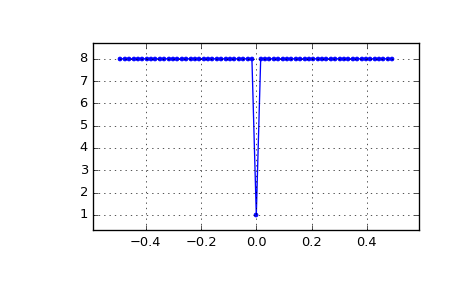
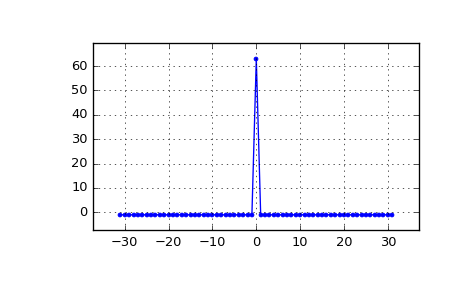

scipy.signal.max_len_seq¶
-
scipy.signal.max_len_seq(nbits, state=None, length=None, taps=None)[source]¶ Maximum length sequence (MLS) generator.
Parameters: nbits : int
Number of bits to use. Length of the resulting sequence will be
(2**nbits) - 1. Note that generating long sequences (e.g., greater thannbits == 16) can take a long time.state : array_like, optional
If array, must be of length
nbits, and will be cast to binary (bool) representation. If None, a seed of ones will be used, producing a repeatable representation. Ifstateis all zeros, an error is raised as this is invalid. Default: None.length : int, optional
Number of samples to compute. If None, the entire length
(2**nbits) - 1is computed.taps : array_like, optional
Polynomial taps to use (e.g.,
[7, 6, 1]for an 8-bit sequence). If None, taps will be automatically selected (for up tonbits == 32).Returns: seq : array
Resulting MLS sequence of 0’s and 1’s.
state : array
The final state of the shift register.
Notes
The algorithm for MLS generation is generically described in:
The default values for taps are specifically taken from the first option listed for each value of
nbitsin:- http://www.newwaveinstruments.com/resources/articles/
- m_sequence_linear_feedback_shift_register_lfsr.htm
New in version 0.15.0.
Examples
MLS uses binary convention:
>>> from scipy.signal import max_len_seq >>> max_len_seq(4)[0] array([1, 1, 1, 1, 0, 1, 0, 1, 1, 0, 0, 1, 0, 0, 0], dtype=int8)
MLS has a white spectrum (except for DC):
>>> import matplotlib.pyplot as plt >>> from numpy.fft import fft, ifft, fftshift, fftfreq >>> seq = max_len_seq(6)[0]*2-1 # +1 and -1 >>> spec = fft(seq) >>> N = len(seq) >>> plt.plot(fftshift(fftfreq(N)), fftshift(np.abs(spec)), '.-') >>> plt.margins(0.1, 0.1) >>> plt.grid(True) >>> plt.show()
Circular autocorrelation of MLS is an impulse:
>>> acorrcirc = ifft(spec * np.conj(spec)).real >>> plt.figure() >>> plt.plot(np.arange(-N/2+1, N/2+1), fftshift(acorrcirc), '.-') >>> plt.margins(0.1, 0.1) >>> plt.grid(True) >>> plt.show()
Linear autocorrelation of MLS is approximately an impulse:
>>> acorr = np.correlate(seq, seq, 'full') >>> plt.figure() >>> plt.plot(np.arange(-N+1, N), acorr, '.-') >>> plt.margins(0.1, 0.1) >>> plt.grid(True) >>> plt.show()